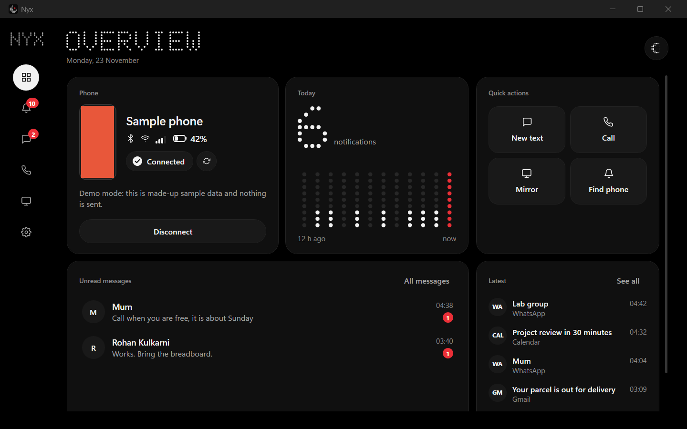
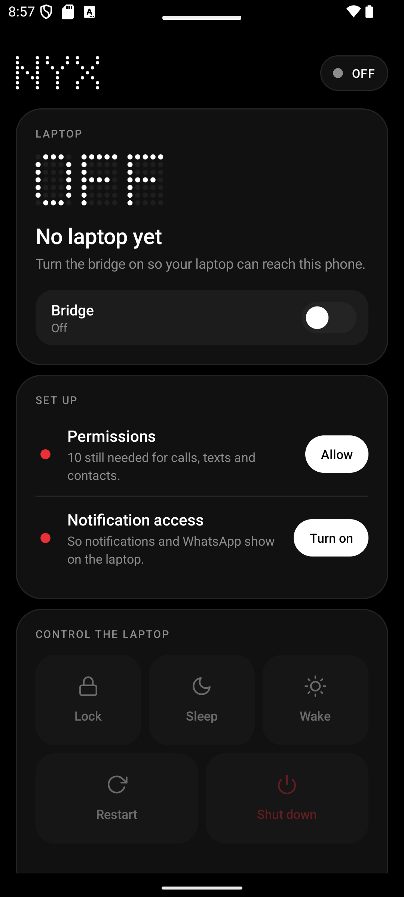
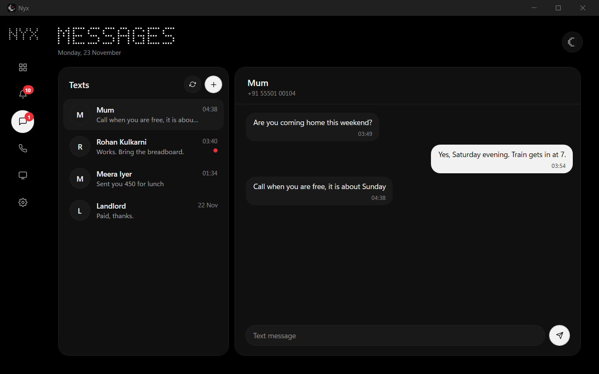
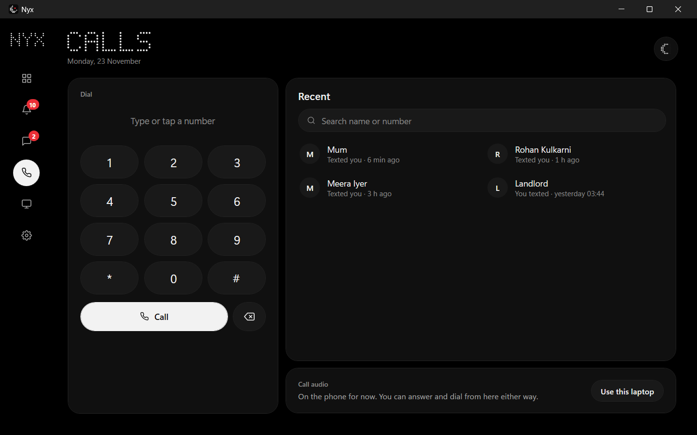

Your phone,
on your laptop
Notifications, texts, calls, your phone's screen, camera and sound: your Android phone, right on your Windows laptop. Direct over your own Wi-Fi or a USB cable, encrypted. No account, no cloud.


Everything in one window
Keep your phone in your pocket. Nyx brings what matters to the screen you're already looking at, and lets the phone do more for the laptop too.
Your phone's screen, on the laptop
Mirror over USB or Wi-Fi with sound, and click to tap, drag to swipe. Over Wi-Fi it's real H.264 video, as smooth as a cable.
Notifications
Everything in your phone's shade, cleared the moment it's cleared there. Nothing pops up over your games.
Texts
Read and reply to SMS with a real keyboard, start new conversations, mark everything read.
Calls
Answer, decline and dial from the laptop, and talk through its mic and speakers.
Second screen
Extend your desktop onto the phone like a small monitor, with real touch and scrolling.
Webcam
Your phone's camera in Meet, Zoom or Teams, ultra-wide included.
Microphone
Use the phone as the laptop's mic, over Wi-Fi.
Phone sound on the laptop
Music and videos move to the laptop's speakers, and the phone goes quiet.
Control the laptop
Lock, sleep, wake, restart or shut down from the phone, and see each request go through.
Send files
Drop files onto the window, or share to Nyx from any app on the phone.
Find your phone
Ring it at full volume from the laptop, even when it's on silent.
iPhone, too
iPhone notifications on the laptop over Bluetooth, no iPhone app needed.
Set up once, then forget it
Nyx runs quietly in the tray and links up by itself whenever your phone is around.
Install both
Nyx for Windows on the laptop, the Nyx app on your Android phone. Both are free.
Pair once
Both screens show the same code. Check it matches, tap Pair, done.
That's it
From then on they find each other on your Wi-Fi, or through the cable, and link in seconds.
Wi-Fi
Links by itself on the same network. Encrypted, and nothing leaves your Wi-Fi.
USB cable
Steady and fast, through the cable. Pick it from the link pill on either device.
Bluetooth
For pairing and when there's no shared Wi-Fi. Also carries call sound.
Made to feel calm


Overview. Your phone's battery and signal, today's notifications, and one-tap actions.
It lands while you work
A notification on your phone shows up on the laptop in a blink. Here's a minute in the life of Nyx.
Ring it at full volume, even on silent.
Nothing leaves your Wi-Fi
No account, no servers, no tracking. Pairing takes one tap and a glance: both screens show the same code. Try it.
- Paired with a codeBoth screens show the same six digits before anything is shared, so nobody else on the network can slip in.
- Encrypted end to endEvery message is AES-256-GCM encrypted, and both sides prove who they are on every connection.
- Keys stay putPairing keys are sealed by Windows for your account, and kept out of phone backups.
- Open sourceEvery line is on GitHub under the MIT licence. Read it, build it yourself, improve it.
- Every stream sealedScreen, camera, mic and sound each get a fresh key, and every frame is encrypted.
- You stay in chargeThe phone asks before sharing its screen, and anything that changes Windows settings asks you first.
Good to know
01Is it really free? What's the catch?
It's free and open source under the MIT licence. There's no account, no ads and no servers: your phone and laptop talk to each other directly.
02Does it work with an iPhone?
Partly, for now. iPhone notifications work over Bluetooth with no app on the iPhone (beta). Mirroring, the webcam and the other streaming features need the Android app.
03Why does Spotify's sound stay on the phone when I mirror over Wi-Fi?
Spotify plays sound in a way Android won't let other apps capture. Nyx notices and keeps it on the phone. For Spotify on the laptop, pick the laptop in Spotify's Connect, or mirror over USB or "USB quality over Wi-Fi", which carry all sound.
04Can the phone wake my laptop from sleep?
Yes, when Windows lets the laptop's Wi-Fi wake it. Nyx's Settings shows whether it does and turns it on for you (Windows asks first). Some laptops turn Wi-Fi off during long sleeps on battery; plugged in, they stay reachable.
05Is it safe to let my phone control my laptop?
Only your paired phone can, and only after both devices prove they share the pairing secret. Restart and shut down wait 15 seconds so you can cancel, and you can turn phone control off in Settings.
06Do I need developer options on my phone?
No. Everything works without them. USB mirroring with scrcpy and "USB quality over Wi-Fi" need USB debugging, which Nyx explains when you choose them.
Set up in two minutes
Install both, put them on the same Wi-Fi, and pair once. After that they find each other by themselves.
Windows
- Download Nyx.exe and double-click it. Nothing to unzip or install.
- If Windows warns about an unknown publisher: More info > Run anyway.
- Allow Nyx on private networks when asked.
Windows 10 (May 2020 Update or newer) or Windows 11, 64-bit. Nothing else to install.
Android
- Download on your phone and open the file. Allow your browser to install apps if asked.
- In Nyx, follow Set up, then switch Bridge on.
- On the laptop, press Pair and check the codes match.
Android 8 or newer. On Android 13+, some permissions need Settings > Apps > Nyx > ⋮ > Allow restricted settings. The app walks you through it.
scrcpy Optional · laptop
You don't need this. Notifications, texts, calls, files and Wi-Fi mirroring all work with just the two apps above.
It adds Mirror over USB, USB quality over Wi-Fi and the one-time Keep payment apps working fix: the free, open-source tool Nyx uses for cable mirroring with every sound and full control.
- Download the Windows zip (scrcpy-win64) and unzip it anywhere.
- In Nyx, open Mirror and press Browse to point at scrcpy.exe (Nyx finds it by itself if you installed it with winget).
- On the phone, turn on USB debugging in Developer options.
Or in a terminal: winget install Genymobile.scrcpy